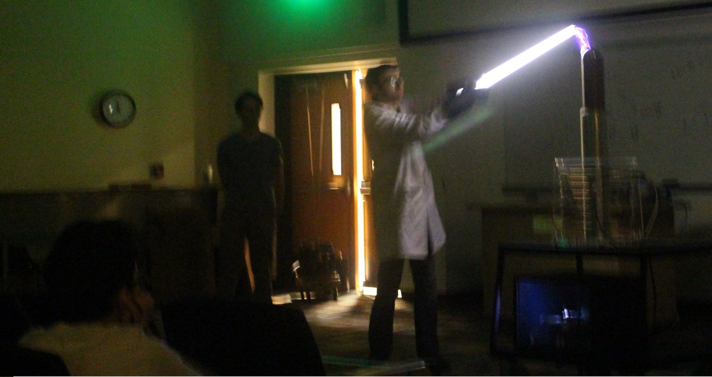

ORCiD
ORCiD
Outreach

The picture above is from the University of South Florida's (USF) Society of Physics Students show at USF's annual Engineering EXPO. Every year the Society of Physics studens would perform a fun, interactive, and educational show for Tampa Bay area schools.
Public Outreach
[1] Astronomical Society of Harrisburg (ASH) Star Party - Between the nights of June 21st - 22nd I volunteered as a speaker and telescope operator at ASH's yearly star party.
[2] Penn State AstroFest - Volunteer at AstroFest 2025 where I ran educational demonstrations to over a thousand guests over 4 nights. I also ran 3 planetarium shows each night at the Penn State Planetarium.
[3] Public Observing Nights - I volunteered at Boston University's Judson B. Coit Observatory's public open night about 15 clear nights a year. I helped set up telescopes and managed the observing session.
[4] Skype a Scientist - Since Spring 2019, I have participated in the Skype a Scientist program. I have talked with over 25 K-12 classrooms across the country. There, I gave mini-lessons on space-based topics and talked to them about life as an astronomer.
[5] USF Engineering EXPO - Organized USF's Society of Physics Students to perform multiple 45-minute shows at USF's annual Engineering EXPO, a 3 day event that brings together thousands of Tampa Bay public school students. Years performed: 2016, 2017, and 2018.
Public Talks
[1] Curtis, O. "A Brief History and Current Search for Extraterrestrial Intelligence Research." Cherry Springs State Park, Potter County, Pennsylvania, June 21st, 2025. Oral Presentation, ~150 guests.
[2] Curtis, O. "A tour of the Galaxy." Judson B. Coit Public Observatory Night, Boston, Massachusetts, April 19th, 2023. Oral Presentation, ~40 guests.